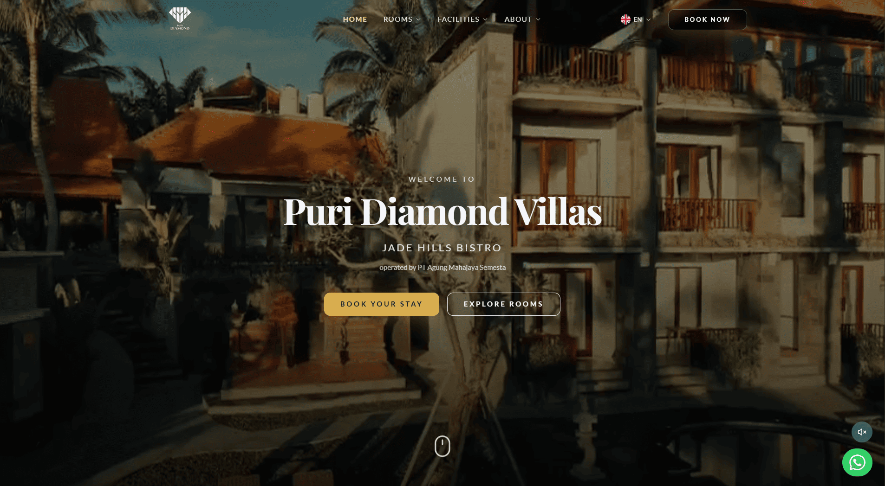
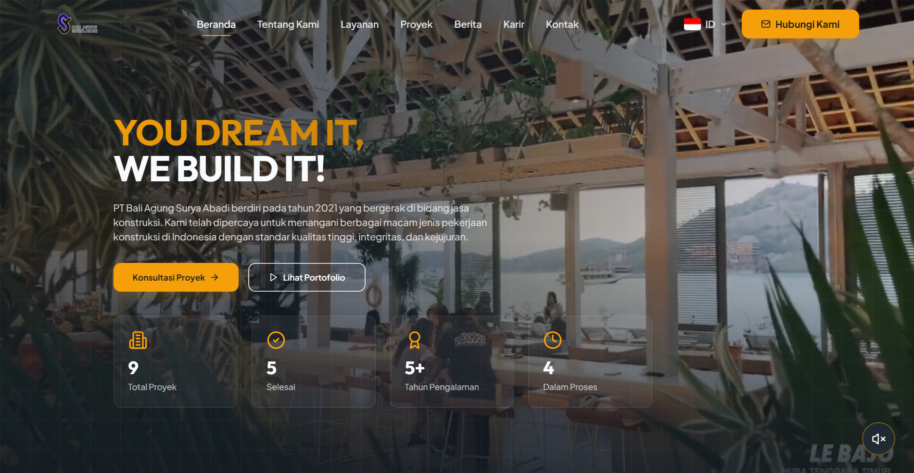
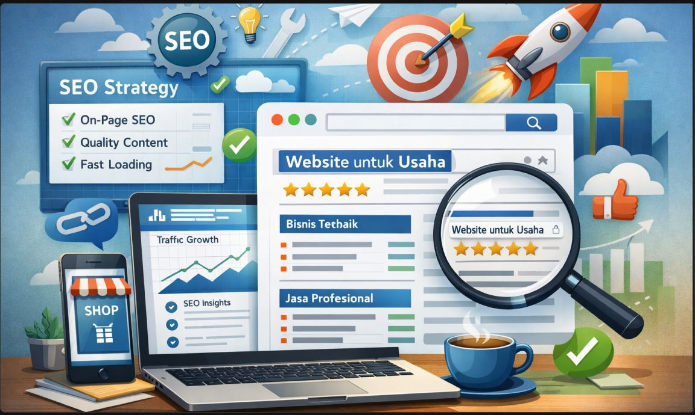
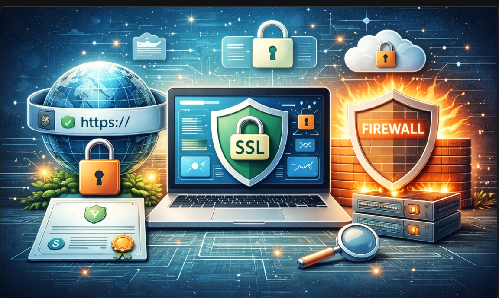

ϟ Mereka mempercayai kami
 Kalifa
Kalifa Puri Diamond
Puri Diamond Bambu Silver
Bambu SilverPengembangan dan Operasional Sistem Bisnis
Sistem bisnis yang kami bangun dan kelola. Dari aplikasi dan integrasi hingga deployment, monitoring, maintenance, dan peningkatan kapasitas.
Bahas Kebutuhan ↗ϟ Mereka mempercayai kami
KalifaPuri DiamondBambu SilverKlien Puas
Projek Selesai
01 / ABOUT
Tentang CV SintekIndo
CV Sinar Teknologi Indonesia mengembangkan sistem bisnis, website, integrasi, otomasi, dan pelatihan IT untuk perusahaan maupun lembaga. Berbasis di Denpasar, Bali, kami tidak hanya membuat aplikasi, tetapi juga menjalankan, memantau, memelihara, dan meningkatkan kapasitas infrastrukturnya.
“BUILDING THE FUTURE
THROUGH TECHNOLOGY”
02 / SERVICES
Solusi Teknologi untuk Operasional Bisnis
Membangun aplikasi kustom, sistem ERP, CRM, dan platform internal yang disesuaikan dengan alur kerja spesifik perusahaan Anda untuk meningkatkan efisiensi operasional.
Integrasi kecerdasan buatan dan otomatisasi proses robotik untuk mengurangi tugas repetitif, menganalisis data, dan mempercepat pengambilan keputusan bisnis.
Desain, migrasi, dan pengelolaan infrastruktur server cloud yang aman, terukur, dan memiliki ketersediaan tinggi untuk mendukung pertumbuhan aplikasi Anda.
Pemeliharaan sistem proaktif, pembaruan keamanan, dan dukungan teknis berkelanjutan untuk memastikan operasi bisnis Anda berjalan tanpa hambatan.
Analisis kebutuhan dan tantangan bisnis.
Desain arsitektur dan timeline proyek.
Coding dan implementasi sistem.
QA, security, dan UAT.
Deployment dan pemeliharaan.
Untuk startup & bisnis kecil.
Mulai Rp 2JT+Sistem terintegrasi menengah.
Mulai Rp 5JT+Skala besar & custom penuh.
Mulai Rp 10JT+*Harga di atas adalah estimasi awal. Harga akhir disesuaikan dengan kompleksitas proyek.
Estimasi akhir mengikuti fitur, integrasi, data, infrastruktur,
jadwal, dan dukungan yang disepakati dalam ruang lingkup proyek.
03 / PROJECTS
Proyek yang Telah Kami Kerjakan

Puri Diamond Villa

PT Bali Agung Surya Abadi
“Outstanding Technology Services with Exceptional UI/UX and Backend Expertise!”
“professional bngttttt”
“Perusahaan software house yang profesional dan sangat memperhatikan kualitas aplikasi.”
04 / INSIGHTS
Insight & Artikel

Website yang dioptimasi dengan strategi SEO tepat membantu bisnis lebih mudah ditemukan Google, meningkatkan kepercayaan, dan memperluas pasar.
BACA SELENGKAPNYA →
Keamanan website menjadi kebutuhan penting bagi bisnis yang ingin menjaga data digital tetap aman di tengah meningkatnya ancaman siber.
BACA SELENGKAPNYA →05 / CONTACT
Mari Diskusikan Kebutuhan Anda